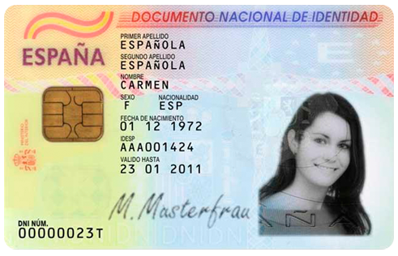
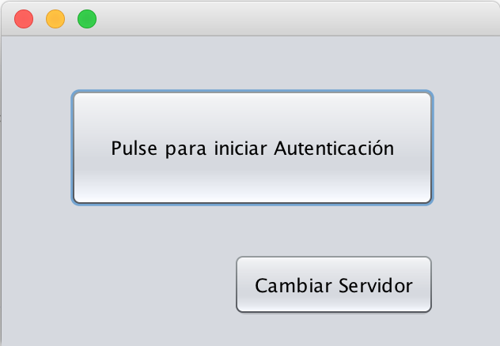
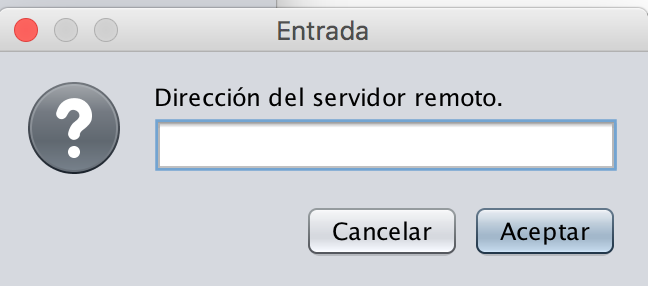

El DNI Electrónico, desde su versión 2.0, contiene en su chip una serie de certificados digitales. Con estos certificados es posible, tanto la identificación legalmente valida como la firma electrónica de documentos. En esta aplicación se hará uso del certificado de Autenticación.
En el certificado de Autenticación se pueden encontrar los datos del usuario, tal como nombre, apellidos, dni, etc. Se usará nombre, apellidos y dni para realizar la autenticación.

La aplicación consiste en un sencillo cliente que realizará una autenticación frente a un servidor, en base a los datos del DNIe del usuario. Por tanto es necesario tanto el DNIe como un Lector de tarjetas inteligentes, sin ellos, la aplicación no funcionará. Para iniciar la autenticación, se inicia la aplicación una vez se haya conectado el lector con el DNIe. En la pantalla principal, se podrá cambiar la dirección IP del servidor en el que realizar al autenticación. Si es correcta, podrá iniciarse. En caso contrario, si se inicia, la aplicación nos avisará si es erronea o ha habido un problema de conexión. Si todo es correcto, la aplicación nos devolverá un mensaje en función de si nuestro usuario existe en la base de datos del servidor elegido, o no.
